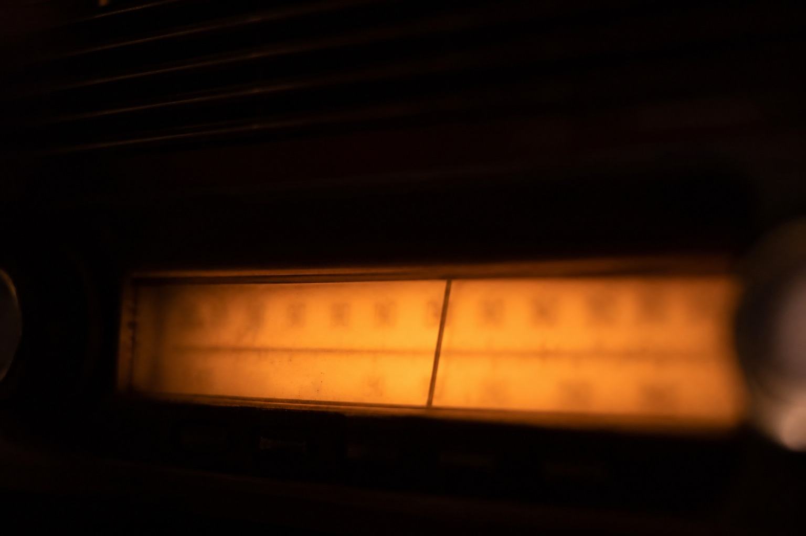

87.3: old night slot. Daytime it should be dead. Mi Qiukui heard sand at 16:00 and wrote “alive again.” Alive is her word. Not mine.
87.8: the rented FM head in the hall. Ji Lengshan said the rental runs till dawn, so old people who cannot walk can hear the wake at home. Close talk gets bitten very clear. I trust that.
88.1: village reading spare. Luan Shouyi sometimes does not change machines. He just reads in the hall. Bleed stacks onto 87.8. If it stacks, do not write both people present.
94.6: county emergency. Night-shift key does not have it. Click lock and you get red type. Do not hunt a transcript there. That cut does not open.
This list only records where it leaked in. It does not judge who is present. The dial photo is soft. Numbers were left unread on purpose. Night shift uses the saved pages. Headphones are on the desk, cord tangled. Tangled still hears sand. Sand is not a person.